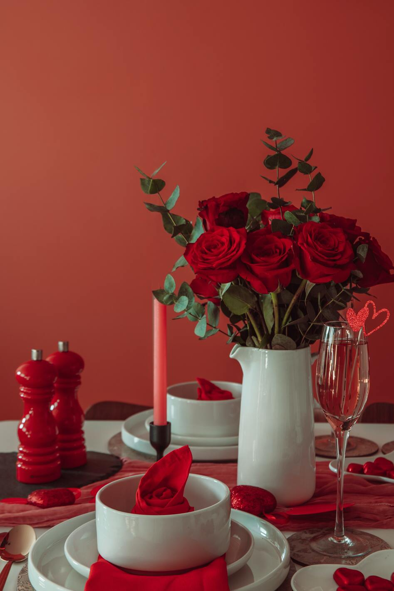
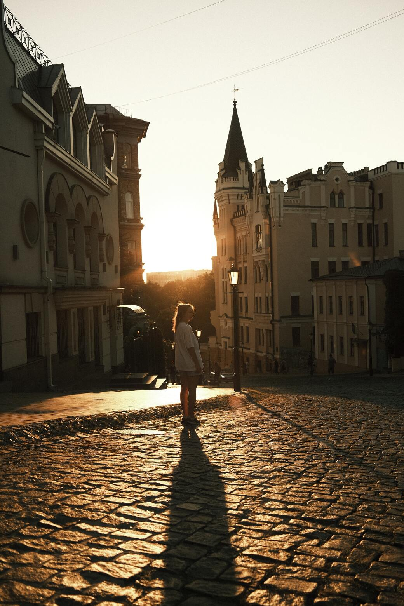

Sumérgete en un mundo de ensueño a través de mis fotografías subacuáticas, donde
la belleza marina cobra vida en cada imagen, revelando la magia del océano.
Andras Stefuca
Mi trabajo se enfoca en transformar la vida urbana en una obra de arte visual,
destacando la belleza oculta de las ciudades y su vida cotidiana.
Consuelo Borroni
Mis imágenes son ventanas a mundos imaginarios, donde la creatividad se desborda en
composiciones únicas y sorprendentes.
Laura Decramer
A través de mi lente, capturo la autenticidad de personas comunes, revelando
historias en cada mirada y expresión.
Diephotopotato
Mi enfoque artístico se centra en jugar con contrastes visuales, creando imágenes
que cuentan historias profundas a través de la interacción

Georgie Devlin
Acompáñame en un viaje a través de mis fotografías que celebran la vida silvestre,
capturando la belleza y la majestuosidad de la naturaleza.
Edgar Santana
Mis retratos son ventanas a las emociones humanas, donde la sinceridad de cada
gesto y mirada se convierte en una historia visual.
Steven Van Elk
Cada imagen que creo es una exploración de las emociones humanas, teñidas con
colores que evocan sentimientos profundos.
Kássia Melo
Mis fotos te llevarán a un viaje cósmico, donde las estrellas y el universo
revelan su belleza ancestral.
Laura Meinhardt
Mis imágenes capturan la emoción y la adrenalina de aventuras extremas,
transportándote al corazón de la acción.
Mak JP
Explora un mundo surrealista a través de mis fotografías, donde la realidad y los
sueños se entrelazan en una danza única.
Marek Mucha
Mi trabajo documenta la belleza oculta de lugares remotos y culturas milenarias,
preservando su legado a través de la fotografía.
Nothing Ahead
Mis imágenes te transportarán a un futuro imaginado, donde la tecnología y la
humanidad coexisten en una simbiosis sorprendente.

Oleksii Piekhov
Mis fotografías son puentes al pasado, donde la historia cobra vida a través de la
nostalgia y la melancolía.
Oljamu
En mis imágenes, los elementos naturales se convierten en entidades místicas que
danzan en armonía con la Tierra.
Reya Kons
Exploro el mundo de las texturas en cada imagen, desde lo rugoso hasta lo suave,
revelando la belleza en lo táctil.
Tobias Waibl
Mis fotos capturan la esencia de la vida urbana, donde los edificios y las luces
nocturnas se convierten en personajes de la ciudad.
Toby Christopher
A través de retratos históricos, descubre las miradas de personas que vivieron en
tiempos pasados, con historias que contar.
Vladyslav Krasnovskyi
Explora las profundidades del océano a través de mis fotos, donde lo desconocido se
encuentra con lo asombroso.
Väinö Parjanen
Cada imagen que creo es una escena de cuento de hadas, donde la realidad y la
fantasía se entrelazan de manera sorprendente.
Wictor Cardoso
Mis fotos capturan la fugacidad del momento, transformando lo efímero en recuerdos
perdurables de la vida.